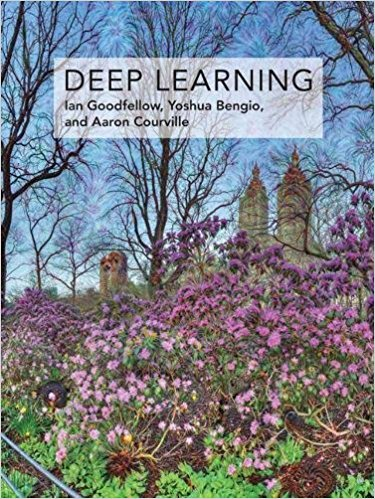
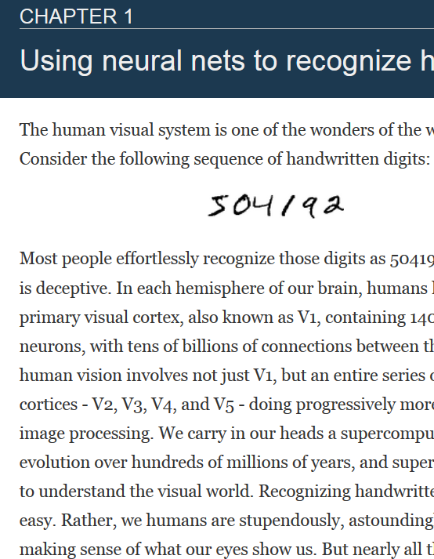
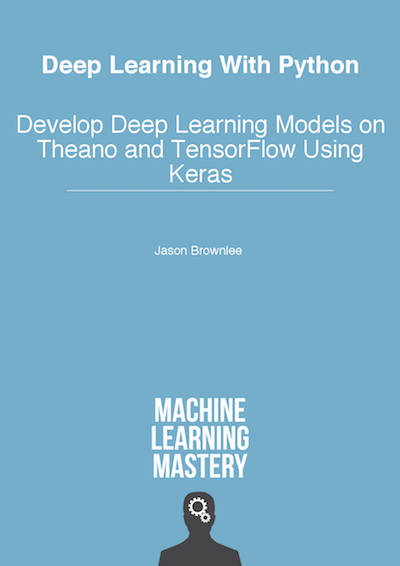
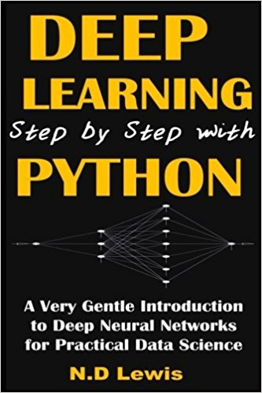
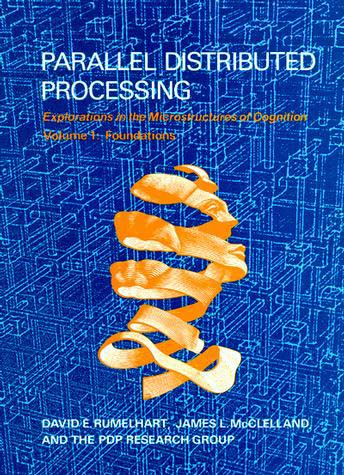

| Assignment | Deadline | Description | Links |
|---|---|---|---|
| Homework 2 Part 1 | October 20th, 2019 | Convolutional Neural Networks | Handout (*.targ.gz) |
| Homework 2 Part 2 | October 20th, 2019 | Face Recognition: Classification and Verification |
Kaggle-classification Kaggle-verification |
| Homework 3 part 1 | October 21st, 2019 | Recurrent Neural Networks | Handout (*.targ.gz) |
| Homework 3 part 2 | October 21st, 2019 | Connectionist Temporal Classification | Kaggle Code Submission Form |
“Deep Learning” systems, typified by deep neural networks, are increasingly taking over all AI tasks, ranging from language understanding, and speech and image recognition, to machine translation, planning, and even game playing and autonomous driving. As a result, expertise in deep learning is fast changing from an esoteric desirable to a mandatory prerequisite in many advanced academic settings, and a large advantage in the industrial job market.
In this course we will learn about the basics of deep neural networks, and their applications to various AI tasks. By the end of the course, it is expected that students will have significant familiarity with the subject, and be able to apply Deep Learning to a variety of tasks. They will also be positioned to understand much of the current literature on the topic and extend their knowledge through further study.
If you are only interested in the lectures, you can watch them on the YouTube channel listed below.
The course is well rounded in terms of concepts. It helps us understand the fundamentals of Deep Learning. The course starts off gradually with MLPs and it progresses into the more complicated concepts such as attention and sequence-to-sequence models. We get a complete hands on with PyTorch which is very important to implement Deep Learning models. As a student, you will learn the tools required for building Deep Learning models. The homeworks usually have 2 components which is Autolab and Kaggle. The Kaggle components allow us to explore multiple architectures and understand how to fine-tune and continuously improve models. The task for all the homeworks were similar and it was interesting to learn how the same task can be solved using multiple Deep Learning approaches. Overall, at the end of this course you will be confident enough to build and tune Deep Learning models.
Instructor:
TAs:
Lecture: Monday and Wednesday, 9:00 a.m. - 10:20 a.m. @ DH A302
Recitation: Friday, 9.00am-10.20am @ DH A302
Office hours:| Day | Time | Location | TA |
| Monday | 1-3 pm | GHC 6708 | Ethan Xuanyue Yang |
| 4-5 pm | GHC 6708 | Kangrui Ruan (Darren) | |
| 5-6 pm | LTI Commons | Liwei Cai | |
| Tuesday | 12-2 pm | GHC 6404 | Pallavi Sharma |
| 5-6 pm | LTI Commons | Liwei Cai | |
| Wednesday | 1-3 pm | GHC 6708 | Hanna Moazam |
| 3-4 pm | GHC 6404 | Hariharan Muralidharan & Wendy Ebanks | |
| Thursday | 1-3 pm | LTI Commons | Aishwarya Reganti |
| Friday | 10.30-11.30 am | GHC 5417 | Kangrui Ruan (Darren) |
| 3-4 pm | GHC 6404 | Hariharan Muralidharan & Wendy Ebanks | |
| Saturday | 4-6 pm | GHC 5417 | Amit Chahar & Parth Shah |
Lecture: Monday and Wednesday, 3:00 p.m. – 4:20 p.m. @ F305 DLR
Office hours:11-785 is a graduate course worth 12 units. 11-485 is an undergraduate course worth 9 units.
Grading will be based on weekly quizzes (24%), homeworks (51%) and a course project (25%).
| Policy | ||
| Quizzes |
There will be weekly quizzes.
|
|
| Assignments | There will be five assignments in all. Assignments will include autolab components, where you must complete designated tasks, and a kaggle component where you compete with your colleagues.
| |
| Project | All students are required to do a course project. The project is worth 25% of your grade | |
| Final grade | The end-of-term grade is curved. Your overall grade will depend on your performance relative to your classmates. | |
| Pass/Fail | Students registered for pass/fail must complete all quizzes, HWs and the project. A grade equivalent to B- is required to pass the course. | |
| Auditing | Auditors are not required to complete the course project, but must complete all quizzes and homeworks. We encourage doing a course project regardless. | |
| End Policy |
Piazza is what we use for discussions. You should be automatically signed up if you're enrolled at the start of the semester. If not, please sign up.
AutoLab is what we use to test your understand of low-level concepts, such as engineering your own libraries, implementing important algorithms, and developing optimization methods from scratch.
Kaggle is where we test your understanding and ability to extend neural network architectures discussed in lecture. Similar to how AutoLab shows scores, Kaggle also shows scores, so don't feel intimidated -- we're here to help. We work on hot AI topics, like speech recognition, face recognition, and neural machine translation.
YouTube is where all lecture and recitation recordings will be uploaded. Links to individual lectures and recitations will also be posted below as they are uploaded. Videos marked “Old“ are not current, so please be aware of the video title.
CMU students can also access the videos Live from Media Services or Recorded from Media Services.
The course will not follow a specific book, but will draw from a number of sources. We list relevant books at the end of this page. We will also put up links to relevant reading material for each class. Students are expected to familiarize themselves with the material before the class. The readings will sometimes be arcane and difficult to understand; if so, do not worry, we will present simpler explanations in class.
You can also find a nice catalog of models that are current in the literature here. We expect that you will be in a position to interpret, if not fully understand many of the architectures on the wiki and the catalog by the end of the course.
| Lecture | Date | Topics | Lecture Slides | Additional Readings (if any) | Homework & Assignments |
|---|---|---|---|---|---|
| 0 | - |
|
Slides (*.pdf) YouTube (url) |
Homework 0 Released | |
| 1 | August 28 |
|
Slides (*.pdf) YouTube (url) | ||
| 2 | August 30 |
|
Slides (*.pdf) YouTube (url) |
Hornik et al. (*.pdf) Shannon (*.pdf) Koiran and Sontag (*.pdf) |
|
| — | September 2 |
|
|||
| 3 | September 4 |
|
Slides (*.pdf) YouTube (url) |
||
| — | September 8 |
Homework 0 Due Homework 1 Released |
|||
| 4 | September 9 |
|
Slides (*.pdf)
YouTube (url) |
||
| 5 | September 11 |
|
Slides(*.pdf) YouTube (url) | ||
| — | September 16 |
|
Slides (*pdf) YouTube (url) |
||
| 6 | September 18 |
|
Slides (*.pdf)
YouTube (url) |
Decoupled Weight Decay Regularization | |
| 7 | September 23 |
|
Slides (*.pdf) YouTube (url) |
||
| 8 | — |
|
Slides (*.pdf) YouTube (url) |
||
| 9 | September 25 |
|
Slides (*.pdf) YouTube (url) |
||
| 10 | September 30 |
|
Slides (*.pdf) YouTube (url) |
Homework 1 Due Homework 2 Released |
|
| 11 | October 2 |
|
Slides (*.pdf) YouTube (url) |
||
| 12 | October 7 |
|
Slides (*.pdf) YouTube (url) |
||
| 13 | October 9 |
|
Slides (*.pdf) YouTube (url) |
How to compute a derivative |
|
| 14 | October 14 |
|
Slides (*.pdf) YouTube (url) |
||
| 15 | October 16 |
|
Slides (*.pdf) YouTube (url) |
||
| 16 | October 21 |
|
Slides (*.pdf) YouTube (url) |
Homework 2 Due (on 20th) | |
| 17 | October 23 |
|
Slides (*.pdf) |
||
| 18 | October 25 |
|
Slides (*.pdf) YouTube (url) |
||
| 19 | October 28 |
|
Slides (*.pdf) YouTube (url) |
||
| 20 | October 30 |
|
YouTube (url) | ||
| 21 | November 4 |
|
|||
| 22 | November 6 |
|
|||
| 23 | November 11 |
|
|||
| 24 | November 13 |
|
|||
| 25 | November 18 |
|
|||
| 26 | November 20 |
|
|||
| 27 | November 25 |
|
|||
| 28 | November 27 |
|
|||
| — | December 2 |
|
|||
| 29 | December 4 |
|
|||
| 30 | December 9 |
|
| Recitation | Date | Topics | Notebook | Videos | Instructor |
|---|---|---|---|---|---|
| 0 - Part A | August 16 | Fundamentals of Python | Notebook (*.tar.gz) |
YouTube (url) |
Hanna |
| 0 - Part B | August 17 | Fundamentals of NumPy | Notebook (*.tar.gz) | YouTube (url) | Joseph |
| 0 - Part C | August 17 | Fundamentals of Jupyter Notebook | Notebook (*.tar.gz) | YouTube (url) | Joseph |
| 1 | August 26 | Amazon Web Service (AWS) and EC2 | Notebook (*.tar.gz) | YouTube (url) | Kangrui, Parth, Wendy |
| 2 | September 6 | Your First Deep Learning Code | Notebook (*.tar.gz) | YouTube (url) | Pallavi, Wendy |
| 3 | September 13 | Efficient Deep Learning and Optimization Methods | Notebook (*.tar.gz) | YouTube (url) | Aishwarya, Bonan, Hanna |
| 4 | September 20 | Debugging and Visualization | Notebook (*.tar.gz) | YouTube (url) | Liwei, Natnael |
| 5 | September 27 | Convolutional Neural Networks | Notebook (*.tar.gz) | YouTube (url) | Kangrui, Bonan |
| 6 | October 4 | Convolutional Neural Networks (CNNs) and HW2 | Notebook (*.tar.gz) | YouTube (url) | Bonan, Parth, Wendy |
| 7 | October 11 | Recurrent Neural Networks (RNNs) | Notebook (*.tar.gz) | YouTube (url) | Hanna, Kangrui, Natnael |
| 8 | October 18 | Connectionist Temporal Classification (CTC) in Recurrent Neural Networks (RNNs) | Notebook (*.tar.gz) | Youtube (url) | Liwei, Natnael, Pallavi |
| 9 | October 25 | Attention Mechanisms and Memory Networks | Notebook(*.tar.gz) | Youtube (url) | Ethan, Liwei |
| 10 | November 1 | Variational Autoencoders | Ethan | ||
| 11 | November 8 | Generative Adversarial Networks (GANs) | Hari, Parth, Amit | ||
| 12 | November 15 | Reinforcement Learning | Hari, Parth, Amit | ||
| 13 | November 29 | Boltzmann Machines |
| Number | Part | Topics | Release Date | Early-submission Deadline | On-time Deadline | Links |
|---|---|---|---|---|---|---|
| HW0 | — | August 12 | September 8 |
Handout (*.tar.gz) |
||
| HW1 | P1 | Engineering Automatic Differentiation Libraries | Sunday, Sept. 9th, 2019 | Wednesday, Sept. 18th, 2019 | Saturday, Sept. 28th, 2019 | Handout (*.targ.gz) |
| P2 | Frame-level Speech Classification | Sunday, Sept. 9th, 2019 | Wednesday, Sept. 18th, 2019 | Saturday Sept. 28th, 2019 | Slack Kaggle Code Submission Form | |
| HW2 | P1 | Convolutional Neural Networks | Monday Sept. 30th, 2019 | Thursday, October 10th, 2019 | Sunday, October 20th, 2019 | Handout (*.targ.gz) |
| P2 | Face Recognition: Classification and Verification | Sunday, Sept. 30th, 2019 | Thursday, October 10th, 2019 | Sunday, October 20th, 2019 |
Kaggle-classification Kaggle-verification |
|
| HW3 | P1 | Recurrent Neural Networks | Sunday, October 20th, 2019 | Wednesday, October 30th, 2019 | Saturday, Nov. 9th, 2019 |
Handout (*.tar.gz) |
| P2 | Connectionist Temporal Classification | Sunday, October 20th, 2019 | Wednesday, October 30th, 2019 | Saturday, Nov. 9th, 2019 |
Kaggle |
|
| HW4 | P1 | Word-Level Neural Language Models | Sunday, Nov. 10th, 2019 | Wednesday, Nov. 20th, 2019 | Saturday, Dec. 7th, 2019 | |
| P2 | Attention Mechanisms and Memory Networks | Sunday, Nov. 10th, 2019 | Wednesday, Nov. 20th, 2019 | Saturday, Dec. 7th, 2019 |
| Assignment | Deadline | Description | Links |
|---|---|---|---|
| Team Formation | September 23rd, 2019 | Teams will be formed in groups of four each *If you do not have a team after this point, you will be grouped randomly |
Team Submission Form |
| Project Proposal | October 7th, 2019 | Project Description Guidelines |
Proposal Submission |
| Midterm Report | Nov. 11th, 2019 | report template is provided to detail your initial experiments | Mid-Report Submission Form |
| Poster Presentation | (Tentative) Dec. (3 - 5), 2019 | It will be a final poster session of the different groups in all three campuses |
Poster guidelines |
| Final Project Report | (Tentative) Dec. (6-7), 2019 | A final project template This should be the final document for the course project |
Final Project Submission Form |
| Summer Practice | Deadline | Description | Links |
|---|---|---|---|
| Homework 1 | NA | Multilayer Perceptrons |
Materials (*.tar.gz) |
| Homework 2 | NA | Basic Image Recognition |
Materials (*.tar.gz) |
| Homework 3 | NA | Basic Sequence Recognition |
Materials (*.tar.gz) |
| Homework 4 | NA | Basic Neural Language Translation |
Materials (*.tar.gz) |




